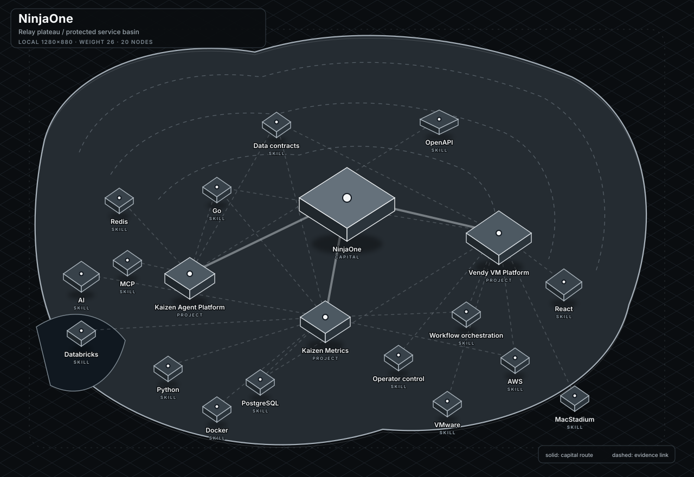
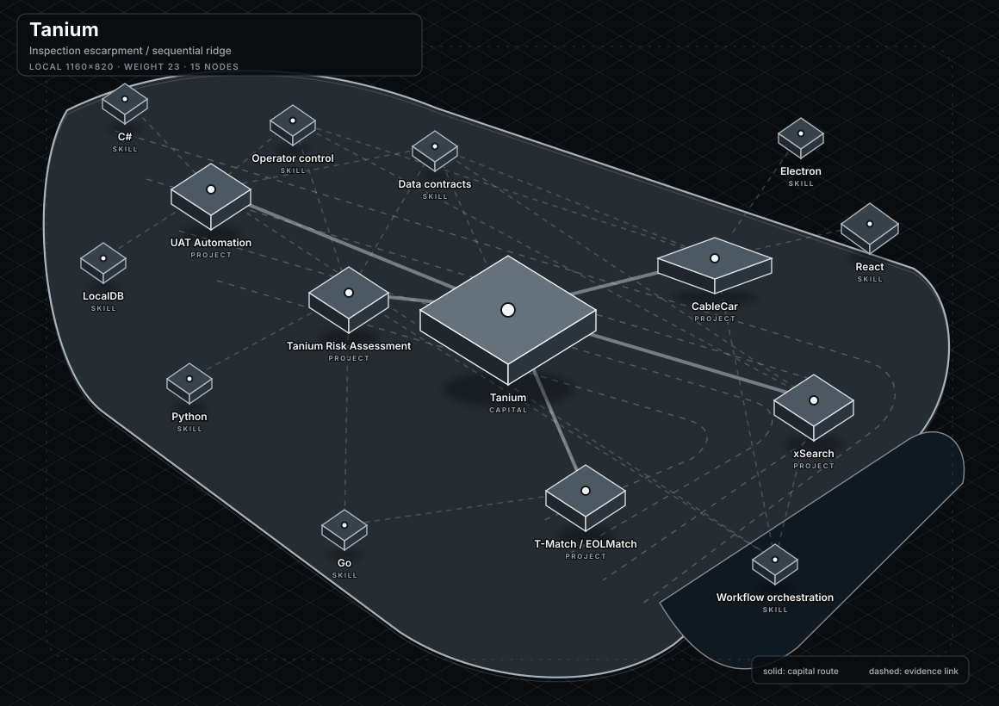
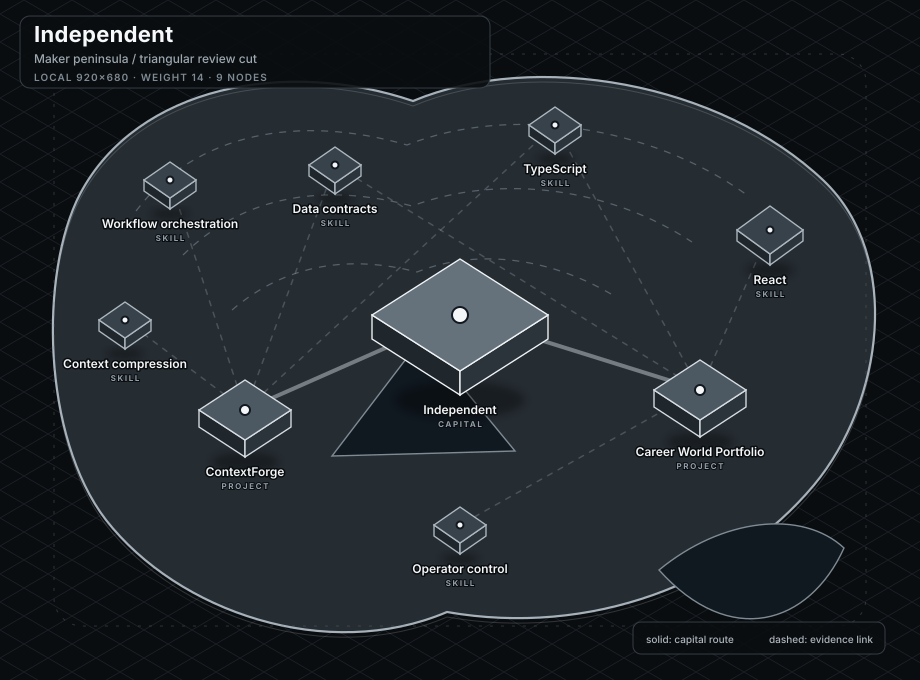
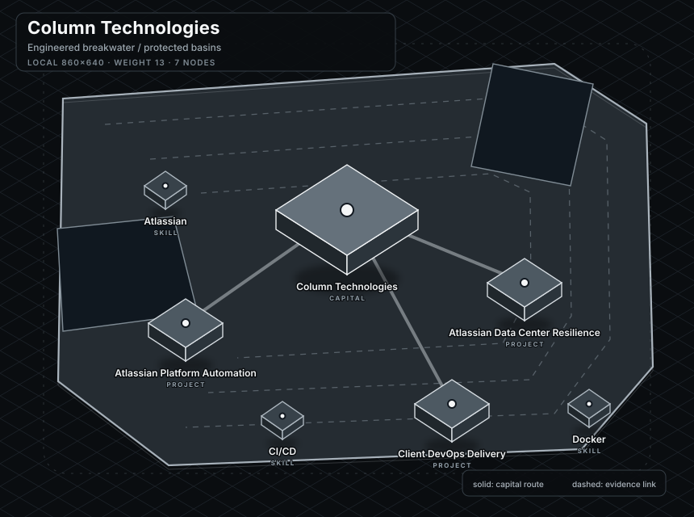
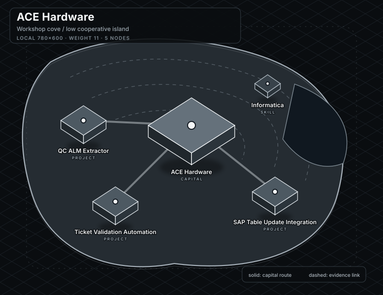

NinjaOne
Relay plateau / protected service basin · 20 nodes

Five independent local coordinate systems. No global map or final stitch is present.
Relay plateau / protected service basin · 20 nodes

Inspection escarpment / sequential ridge · 15 nodes

Maker peninsula / triangular review cut · 9 nodes

Engineered breakwater / protected basins · 7 nodes

Workshop cove / low cooperative island · 5 nodes
